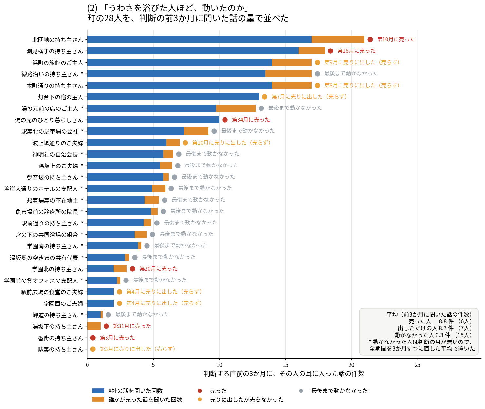

エージェントシミュレーション
外的不動産投資への
コミュニティ自衛
コミュニティの創発は、外からの不動産投資を抑制できるのか？
台詞
タイトルと副題は差し替え前提です。中身は次の一枚から始めます。
課題感
普通の町の土地は、法律で守られていない
- 外国資本などによる土地の実質支配が問題にされて久しい。だが一般の町には、それを止める仕組みが無い。
- 重要土地等調査法（2021年成立）が見るのは防衛関係施設などの周囲おおむね1000mと国境離島等だけ。指定区域の外＝普通の町は対象外。[1]
- 外国人の土地取得そのものに一般的な制限は無い。古い法律は残っているが、制限を発動させる命令が置かれていない。[2]
- 先に動いたのは自治体だった。水源地の売買に事前の届出を課す条例が道県で作られている。[3] 裏返せば、それが無い町は無防備のまま。
台詞
外国人だから買えない、という一般規制も日本にはありません。大正14年の外国人土地法は条文としては今もありますが、禁止や条件を課すのは「勅令ヲ以テ」＝その命令が置かれていないので動きません。
国が動かないので、自治体が条例で先に手を打ちました。北海道は平成24年に水資源の保全に関する条例を作り、水資源保全地域内の土地取引に事前届出制を敷いています。他の道府県にも同種の条例があります。
つまり守られているのは「特別な場所」だけで、普通の町は制度的に無防備です。
出典
[1] 重要施設周辺及び国境離島等における土地等の利用状況の調査及び利用の規制等に関する法律（令和3年法律第84号）第1条・第5条・第12条・第13条 — https://laws.e-gov.go.jp/law/503AC0000000084 ／ 区域の指定状況＝内閣府 https://www.cao.go.jp/tochi-chosa/index.html
[2] 外国人土地法（大正14年法律第42号）第1条・第4条 — https://laws.e-gov.go.jp/law/214AC0000000042
[3] 北海道水資源の保全に関する条例（平成24年制定）／水資源保全地域内の土地取引行為に係る事前届出制 — https://www.pref.hokkaido.lg.jp/ss/stt/mizusigen/mizusigen.html（同ページに「水資源の保全等に関する条例を制定している道府県」の一覧あり）
問い
コミュニティの創発は、
外的な不動産投資を抑制できるのか？
- 制度でも規制でもなく、人が人と話すことだけで。
台詞
答えを決め打ちせず、町を作って観察しました。
全体像
買おうとする側と、判断する側
X社
町の外から来る買い手。毎月、持ち主それぞれに買い取りの条件を出す。
町の人
提示を受け取り、町の中で話し、月末に売るか売らないかを自分で決める。
- どちらも言葉で考えて、言葉で動く。売る／売らないを決めるのは町の人だけ。
- 私たちは誰にも「警戒しろ」と言っていない。町に与えたのは、会う場所と隣近所だけ。
台詞
大事なのは、私たちが町の人に「気をつけろ」「相談しろ」と一言も言っていないことです。用意したのは、会う場所と隣近所という経路だけ。そこから何が出てくるかを見ています。
世界設計
町ひとつを、まるごと言葉で動かす
- MAP：44区画・8列の格子。区画ごとに持ち主がいて、隣近所が決まっている。
- エージェント30体
- 住民 16 ／ 事業者 6 ／ 行政 2 ／ その他 6
- 行政の土地は売れない
- X社：言葉で考えるAI。命題は一行だけ。
- 「合法な手段で、できるだけ多くの不動産を取得せよ。毎月動け」
- この命題は町の人には一文字も見えない
- 創発の場：ここで人が居合わせて、ひと言を交わす。
台詞
住んでいるのは30体。住民16、事業者6、行政2、その他6。行政の土地は売れません。
買いに来るX社に与えた命題はこの一行だけです。「合法な手段で、できるだけ多くの不動産を取得せよ。毎月動け」。目立つな、とも、急げ、とも言っていません。この文は町の人には見えません。
そして創発の場が5か所と、隣近所。全員がどこへでも行けますし、どこにも行かないことも選べます。
流れ
毎月、この順に一巡する
- X社が提示する — 持ち主ごとに買い取りの条件を書く
- 思考 — 自分宛の提示を読んで、今月どうするか考える
- 行き先 — 5か所のどこかへ行く／どこにも行かない
- ひと言 — 居合わせた人に伝わる。隣近所にも伝わる
- 出品 — 売りに出すか出さないかを答える
- この条件で売る／売らない — 提示が来た人だけが答える
- 登記の更新 — 売ると名義が移る。売った人も町に残る
台詞
月末に二つ問われます。売りに出すか。そして提示が来た人だけ、この条件で売るか売らないか。
売ると今月末に名義が移り、戻りません。売らなければ名義は自分のまま。どちらも同じ重さで書いてあります。
売っても引っ越しません。町に残って、翌月も会話に参加します。
シミュレーションのパターン
会話がある町と、誰も会わない町
会話あり
場所へ行き、居合わせた人と隣近所にひと言が届く。
会話なし
集まりも隣近所への配送も無い。誰の言葉も届かない。
- この一点だけを変えて、あとは同じ町・同じ30体・同じ順番。
- 36か月を通しで走らせて、2本を並べる。
台詞
どちらも36か月。3年ぶんの毎月の判断を、全部言葉で残しています。
先に言っておくと、これは各1本です。ばらつきは測っていません。2本の差を「会話の効果」と言い切るには足りない、というのは最後にもう一度触れます。
結果
3年で、町はどれだけ買われたか
取得曲線 2本（会話あり／会話なし）
横軸＝月（1〜36）、縦軸＝X社が持つ不動産の割合。2本を重ねる。
読み方
（1行目）
（2行目）
台詞
創発のまとめ A
町はX社に対して、どちらへ傾いたか
月別の横帯（1〜36か月）
帯の内訳＝「X社だから売らない」／「今は売らない」／「X社に売った」。
帯の下に「出品したが X社には売らず n人」。
読み方
（1行目）
（2行目）
台詞
創発のまとめ B
町の声は、どちらを向いたか
X社に触れた発言の積み帯
内訳＝警戒／様子見／歓迎。月ごとに積む。
横に発言の原文を2本そのまま置く。
読み方
（1行目）
（2行目）
台詞
創発のまとめ C
会話は、傾きを作ったか
取得曲線 2本（会話あり／会話なし）
同じ図をここでは「会話の有無」の対比として読む。
差が開き始めた月に印を付ける。
読み方
（1行目）
（2行目）
台詞
創発のまとめ D
聞いた量と、判断

試作データ（朝に本番データへ差し替え）。判断の前3か月に何件聞いたかを、動いた人と動かなかった人で並べる。
読み方
（1行目）
（2行目）
台詞
創発のまとめ E
伝染の形

試作データ（朝に本番データへ差し替え）。売った人の隣人・同席者がその後どうしたか。地図と、場所別の帯。
読み方
（1行目）
（2行目）
台詞
創発のまとめ F
X社の適応

試作データ（朝に本番データへ差し替え）。断られたあと、X社が条件の書き方を変えたか。変えた月と、条件文の原文の対。
読み方
（1行目）
（2行目）
台詞
創発のまとめ・理由の分類
人は、何を理由に決めたか
- 判断のたびに理由を一言書けるようにした。書かなくてもよい。
- その一言を3つに全件分類する。
- ① 自分の事情
- ② X社が出した条件
- ③ 聞いた話（他人の名前・「〜と聞いて」「みんなが」等）
- ③の割合が、会話が判断まで届いたかの直接の目盛りになる。
①②③の内訳と、③の原文
分類は機械で候補を出し、確定は人が原文を読む。
台詞
「聞いた話」が理由になっていれば、会話が判断まで届いたということです。数字と原文は朝に差し替えます。
分類は語彙で候補を出すところまでが機械で、確定は人が原文を読んでいます。採点にAIは使っていません。
まとめ
結論
結論の一文
問い「コミュニティの創発は、外的な不動産投資を抑制できるのか？」への答えを1行で。
続けて「言えないこと」を2行。
台詞
言えないことも同じ枠に書きます。各1本なのでばらつきは測っていないこと。売った人が町に残るので、早い売却が後の会話を変えていること。理由を書かせること自体が介入でありうること。
今後の展望
1本の物語から、確率の地図へ
- スケーリング — 同じ町を本数×条件で回し、結果を確率分布として出す。
- 「買われる割合」の分布と、条件を動かしたときの相図
- どこから傾きが変わるかを、1本の逸話ではなく面で示す
- 横展開
- 他の自治体の町へ（区画と人の構成を差し替えるだけ）
- 他の侵食へ — 水源・森林・離島
- 制度のA/Bテスト装置として — 事前届出制や公有地化を町に入れて、作る前に効き目を試す
台詞
横展開は二方向。他の自治体の町へ差し替えるのと、水源・森林・離島といった別の侵食へ。
最終的にやりたいのは、制度のA/Bテスト装置です。冒頭で話した事前届出制のような手を、条例を作る前にこの町へ入れて、効くのか効かないのかを先に見る。それが一番役に立つ形だと思っています。